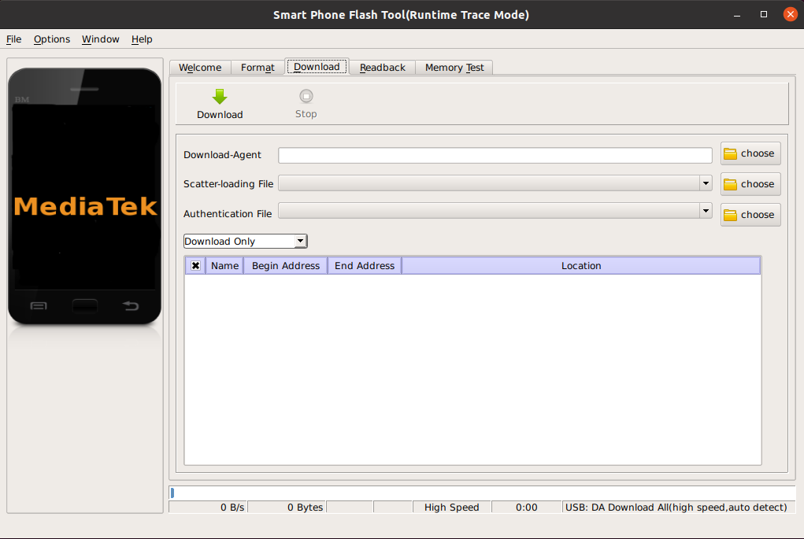
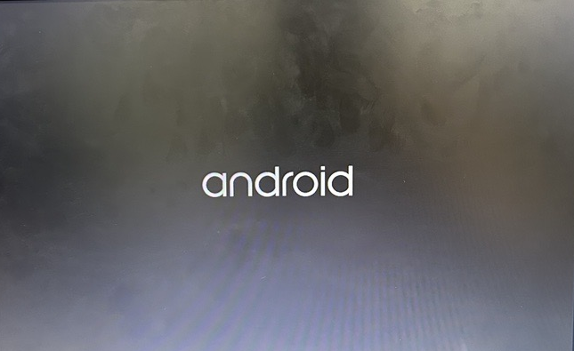

Android OS Flashing Guide for I-Pi SMARC 1200This guide provides step-by-step instructions for flashing Android OS on the I-Pi SMARC 1200 platform.Follow these steps carefully to ensure a successful installation. 1. Prerequisites I-Pi SMARC 1200 development board with power cable. Linux host with a USB port (Ubuntu 20.04 or newer, with a minimum storage of 350GB). USB to micro cable. Stable internet connection. Software (Versions used in this documentation are listed below) Ubuntu 20.04 Android 13 OS Flash Tool - SP_Flash_Tool_Selector_exe_Linux_v1.2308.00.100 2. Flashing Procedure2.1 Download Android OS for I-Pi SMARC 1200 Download the Android OS specifically built for the I-Pi SMARC 1200 from I-Pi SMARC 1200 Android. Extract the contents of the downloaded “LEC-MTK-I1200_09112023_.zip” file into your preferred directory. This package contains pre-built binaries and image files. 2.2 Download Flash Tool Download the required Flash Tool from Download SP-Flash-Tool. Extract the contents of the downloaded “SP_Flash_Tool_Selector_exe_Linux_.zip” file into your preferred directory. 2.3 USB Setup for UbuntuTo ensure proper identification of the MTK device by ADB and flash_tool, follow these steps to add rules: Open the ADB rules file for editing: sudo gedit /etc/udev/rules.d/53-android.rules Add the following lines: SUBSYSTEM=="usb", SYSFS{idVendor}=="0bb4", MODE="0666"SUBSYSTEM=="usb", ATTR{idVendor}="0bb4", ATTR{idProduct}="0c03", SYMLINK+="android_adb" Open the MTK rules file for editing: sudo gedit /etc/udev/rules.d/53-MTKinc.rules Add the following lines: SUBSYSTEM=="usb", SYSFS{idVendor}=="0e8d", MODE="0666"SUBSYSTEM=="usb", ATTR{idVendor}="0e8d", ATTR{idProduct}="2000", SYMLINK+="android_adb"KERNEL=="ttyACM*", MODE="0666" Set appropriate permissions: sudo chmod a+rx /etc/udev/rules.d/53-android.rulessudo chmod a+rx /etc/udev/rules.d/53-MTKinc.rules Restart the udev service: sudo /etc/init.d/udev restart Remove modemmanager to prevent conflicts: sudo apt-get remove modemmanager Restart the udev service once again: sudo /etc/init.d/udev restart After completing these steps, your Ubuntu system should be properly configured for Android development and flashing on MTK devices. 2.4 Flashing Android onto UFS and Booting the Board with Android2.4.1 Launch the Flash Tool Interface Navigate to the “\SP_Flash_Tool_Selector_exe_Linux_\SP_Flash_Tool_V5” directory and execute the following command to launch the flash tool interface ./flash_tool  2.4.2 Configure Flash ToolEnsure that you follow the steps below in the specified order to properly configure the Flash Tool for your flashing process: Click the select icon next to “Download Agent” and navigate to the “MTK_AllInOne_DA.bin” file within the “SP_Flash_Tool_V5” folder. Click the select icon next to “Scatter-loading File” and navigate to the scatter file within the downloaded OS folder “LEC-MTK-I1200_09112023_“. In the drop-down box, choose “Format ALL+ Download.” 2.4.3 Flashing Process Safely power down the board by turning it off. Modify the boot device configuration to “1001“ as shown below. Connect the board to the host PC using an USB-OTG cable. Turn on the board. In the Flash Tool, click the “Download” button. On the board, press the “RESET” button to initiate the flashing process. Once the flashing completes, a “Download OK” prompt will appear. After successful download, click the “RESET” button on the board again to complete the installation process. 2.4.4 Verification of Successful Flashing Connect the USB OTG cable and power supply cable both power are necessary for this release of Android OS to boot the board. Note: If you boot up the board with the OTG cable is not connected the performance may not be good. It is a known issue of this release. Power on the board. Connect an HDMI display to the board to view the Android interface.  Navigate to the “Settings” app, scroll down, and select “About Phone” to view the Android OS version.